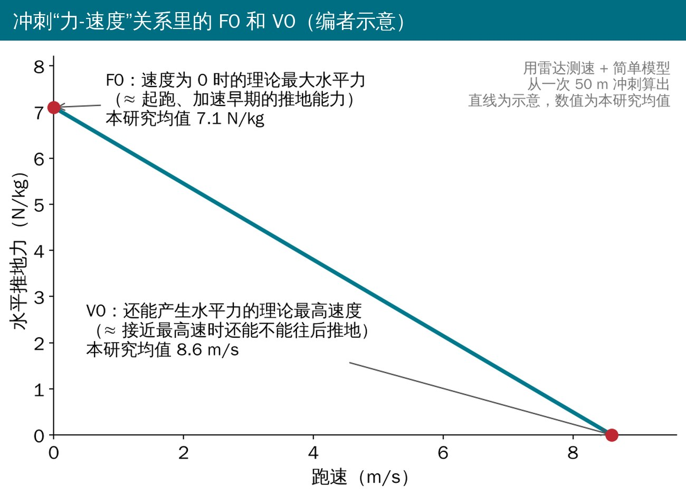
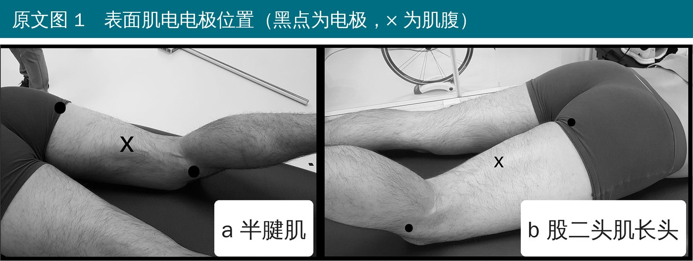
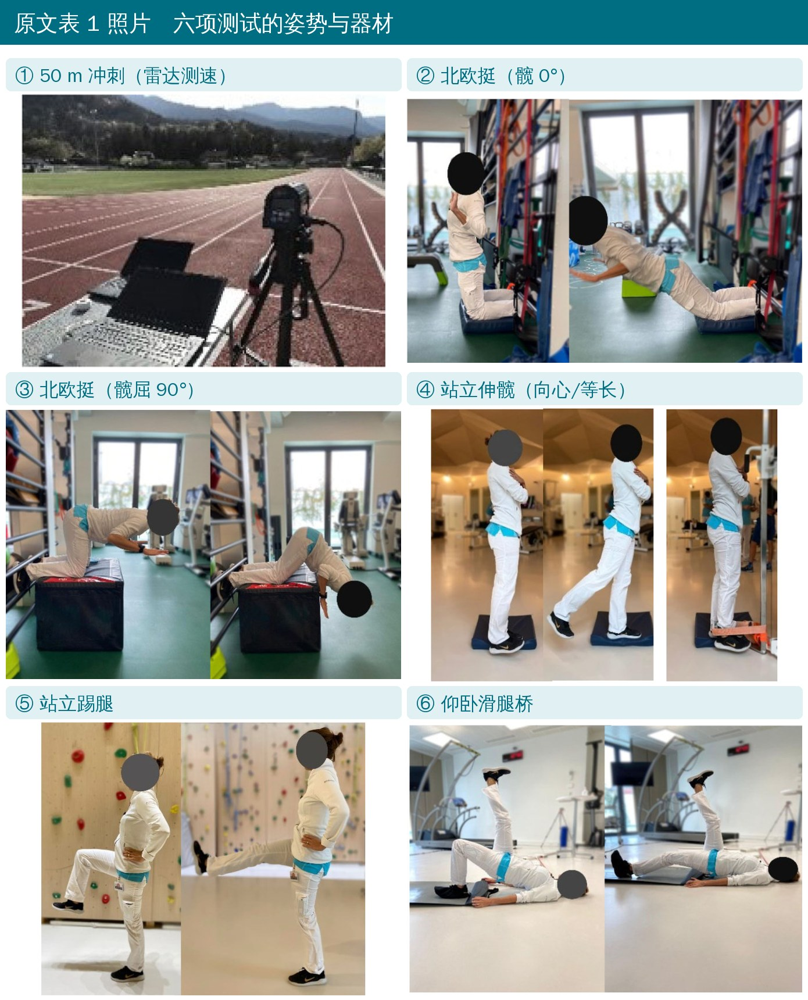
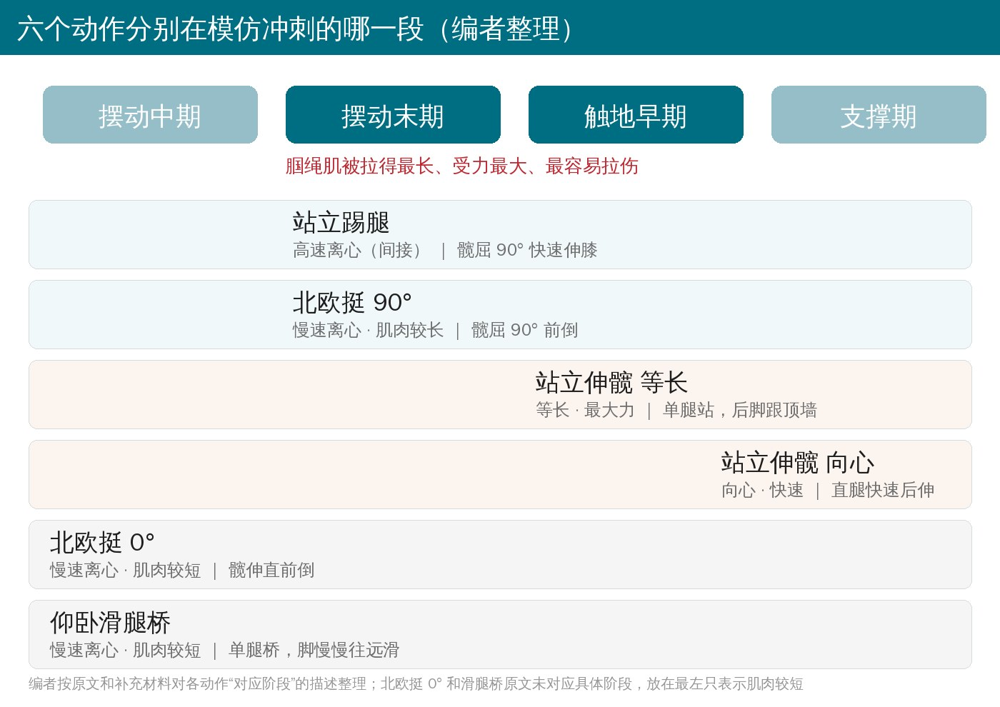
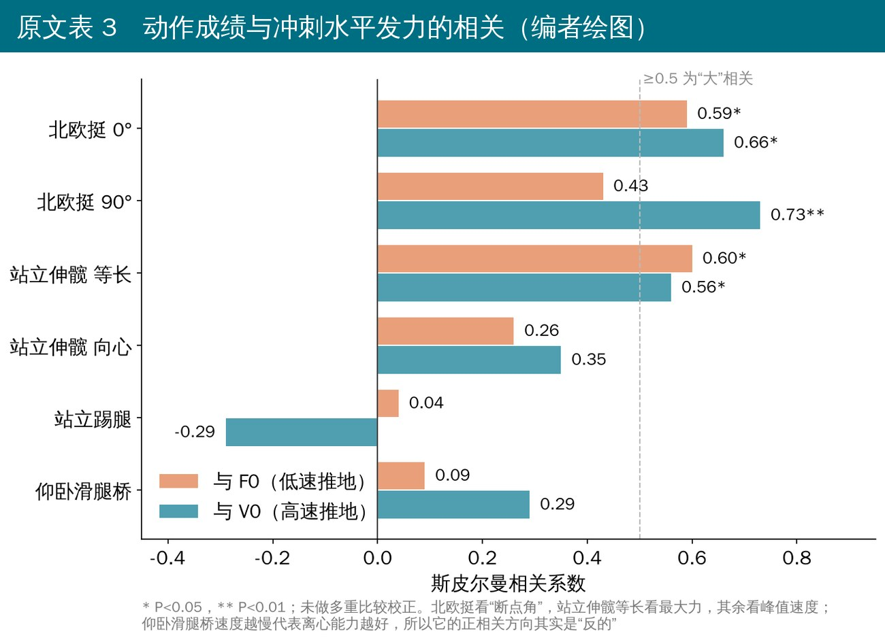
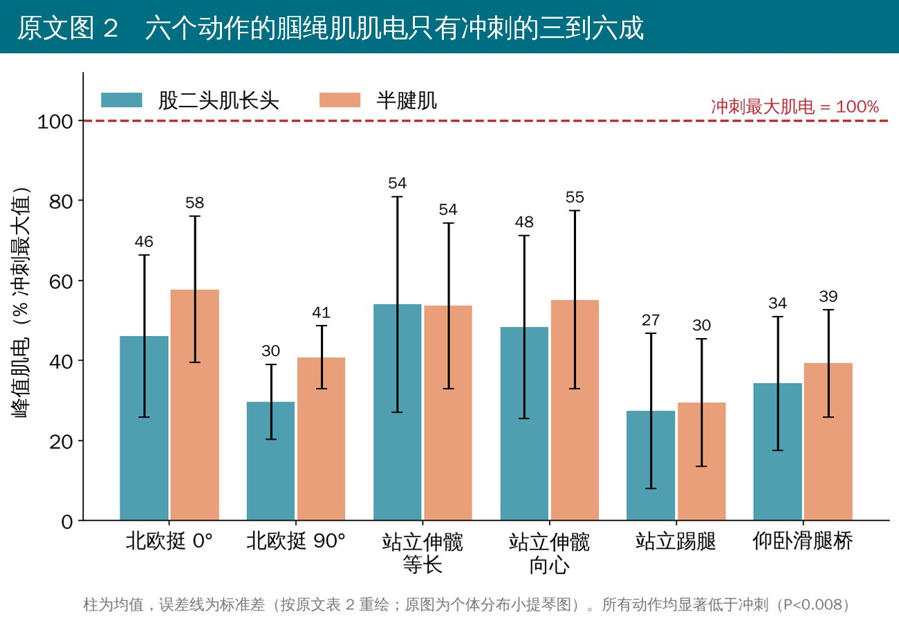

🔖原文信息（编者中文重排）
📚 文献信息
▪ Prince C, Morin J-B, Mendiguchia J, Lahti J, Guex K, Edouard P, Samozino P. Sprint Specificity of Isolated Hamstring-Strengthening Exercises in Terms of Muscle Activity and Force Production. Front Sports Act Living. 2021;2:609636.
▪ 作者来自法国萨瓦大学、圣艾蒂安大学医院、西班牙 ZENTRUM 康复中心、瑞士田径队等
▪ 简报（横断面研究）；DOI：10.3389/fspor.2020.609636
▪ 动作测试细节来自原文补充材料
腘绳肌拉伤是短跑和足球里的头号肌肉伤，北欧挺这类离心训练能把发生率降下来，但拉伤并没有因此消失。一种解释是：我们在健身房里练的腘绳肌，和冲刺时真正用到的腘绳肌，不是一回事。
冲刺时，腘绳肌在摆动末期被拉到最长、同时要刹住小腿往前甩，到触地早期又要马上把身体往前推。所以作者想知道：常用的腘绳肌动作里，哪些在“发力”和“肌肉激活”两方面最像冲刺？
先说结论：北欧挺和站立伸髋（等长）的成绩，和冲刺时的水平推地能力相关最紧；但6 个动作的腘绳肌肌电平均都不到冲刺的 60%——想让腘绳肌达到冲刺那种激活水平，目前只有冲刺本身能做到。
• 对象：法国田径俱乐部的 14 名短跑运动员（男女各 7 人），平均 19.5 岁，训练 10 年左右，每周练约 7 小时；100 m 赛季最好成绩男 11.84 秒、女 13.53 秒（地区级水平）；近 6 个月没有腘绳肌伤
• 同一次测试里完成：30 分钟热身 → 两次 50 m 全力冲刺（蹲踞式起跑）→ 休息 10 分钟 → 6 个腘绳肌动作（随机顺序，每个先熟悉 3 次再正式做 3 次）
• 冲刺：身后放雷达测速，算出“力-速度”关系的两个端点 F0 和 V0（见下图）
• 肌电：贴在优势腿的股二头肌长头和半腱肌，以两次冲刺中最大的一次肌电爆发作为 100%

🔖F0 与 V0 的含义（编者示意）

🔖原文图 1 电极位置

🔖原文表 1 照片 六项测试
以下做法、口令和测量方法来自原文表 1 和补充材料：
• 跪在 45 cm 高的凳子上，双脚被固定；双臂交叉抱胸，髋保持完全伸直
• 口令：“慢慢往前倒，只用大腿后侧的力量撑住。后面实在撑不住了就放手，用手撑地”
• 测什么：用 iPad 慢动作（240 帧/秒）拍摄，找出“断点角”——膝关节角速度超过 10°/秒、开始撑不住的那个角度，角度越大说明离心能力越好
• 特点：慢速离心，腘绳肌处在相对较短的长度
• 同上，但全程保持屈髋 90°（上身前倾），让腘绳肌处在更长的位置再做离心
• 测量同样是断点角
• 等长版：非优势腿单腿站，靠墙，双臂交叉抱胸；优势腿直膝、用后脚跟全力往后顶墙，脚跟和墙之间放手持测力计，记录最大力（按体重标准化）。模仿触地早期
• 向心版：同样单腿站、双手抱肩，优势腿直膝、尽量快地往后伸髋，上身不能前倾；脚跟系拉线编码器测峰值速度。模仿支撑期往后扒地
• 口令：“手一直放在肩上、腿伸直，重心移到支撑腿，用另一条腿尽量快地往后伸髋，不准弯腰”
• 非优势腿单腿站，双手抱肩；优势腿屈髋 90°、屈膝 90°
• 口令：“单腿站稳，用屈着的那条腿尽量快地踢出去”——髋角不变，只做快速伸膝
• 测什么：脚跟的峰值速度。思路是腘绳肌要在高速下离心“刹车”，对应摆动末期的姿势
• 仰卧，优势腿屈膝、脚踩在 2 米长的滑板上，另一条腿伸直抬在空中；臀部抬起成单腿桥
• 口令：“一条腿抬着，另一只脚尽量慢地往远处滑，直到撑不住体重”
• 测什么：脚跟的峰值速度，越慢说明离心控制越好

🔖六个动作分别模仿冲刺的哪一段（编者整理）

🔖动作成绩与 F0、V0 的相关
• 北欧挺 90°的断点角和 V0 相关最强（0.73）；北欧挺 0°和 F0、V0 都相关（0.59、0.66）
• 站立伸髋等长的最大力和 F0、V0 都相关（0.60、0.56）
• 站立伸髋向心、站立踢腿、滑腿桥和冲刺发力都没有显著相关
• 有意思的是，作者原本预测“慢速离心的北欧挺只跟低速推地（F0）有关”，结果它跟高速推地（V0）关系更紧

🔖6 个动作的峰值肌电（% 冲刺最大值）
• 最高的是站立伸髋（等长、向心）和北欧挺 0°，大约是冲刺的 50%～58%
• 北欧挺 90°、站立踢腿、滑腿桥只有 30%～40%；北欧挺加了屈髋 90° 后，肌电反而更低
• 个体差异很大，少数人在个别动作里接近冲刺水平，但平均值全部显著低于冲刺
• 只有 14 人、只测一次，没有任何训练干预：只能说“谁北欧挺好、谁冲刺推地也好”，不能说“练北欧挺就能让你推地更好”
• 12 组相关没有做多重比较校正，作者自己也承认部分相关可能是偶然
• 多数动作没有直接测力，而是用速度或断点角间接推算；断点角与离心峰值力矩的关系也不稳定
• 动作都不是“大负荷”做的，肌电低可能部分是因为强度不够（比如没有测罗马尼亚硬拉这类大重量动作）
• 受试者是地区级运动员，结论能否推到高水平运动员还不知道
原文里对不上的地方：
• 表 3 的 95% 置信区间窄得不合理：14 人、rs=0.66 时，按常规方法置信区间约 0.20～0.88，表里却写 0.55～0.76；其他几行同样偏窄
• 表 3 中 V0 与站立踢腿 rs=−0.29、P=0.209，与滑腿桥 rs=0.29、P=0.299：同样的样本量、相同的绝对值，P 值应该一样（按计算约 0.31）；滑腿桥那一行还写成了“SL”
• 信度：正文说 F0 的组内相关系数是 0.69～0.96（“中等”），表 2 却写 0.996；北欧挺 0°、V0、最高速的表 2 数值也都落在正文给的范围之外
• 站立伸髋等长：表 1 写测量工具是拉线编码器，补充材料写的是手持测力计；表 1 把它称为“低速向心能力”，但它其实是等长
• 方法里一处说“测试始终按同样顺序”，另一处说 6 个动作“随机顺序”
• 讨论里一处说“北欧挺 90° 从发力角度看具有冲刺特异性”，但它只和 V0 相关、和 F0 不相关；另有一句把“从 90° 到 0°”说成“增加腘绳肌拉伸”，方向写反了
• 受试者平均 19.5 ± 3.2 岁、方法写“成年运动员”，伦理声明却写“由法定监护人签署知情同意”，像是模板没改
这篇不是训练研究，但对怎么搭配腘绳肌训练有几点很直接的启发：
• 冲刺本身就是最“专项”的腘绳肌训练：任何孤立动作都达不到冲刺时的激活水平，康复和预防计划里应该有逐步加量的高速跑
• 北欧挺留着：它不仅是预防拉伤证据最多的动作，成绩也和高速推地能力相关
• 加上站立伸髋等长（脚跟顶墙）：不需要器械、激活水平在 6 个动作里最高，而且和起跑、高速推地都相关；可以作为北欧挺之外的“等长”补充
• 单靠屈髋 90° 的北欧挺来“模拟摆动末期”，从肌电角度看并不划算
• 站立伸髋顶墙 + 手持测力计、北欧挺 + 手机慢动作测断点角，都是门诊里可以复制的简单测试，可用来追踪康复进度（信度在本研究中良好到优秀）
原文表 1 各项测试的设置、口令与测量
| 测试 | 评估什么 | 测量指标 | 工具 |
|---|---|---|---|
| 冲刺 50 m | 低速（F0）和高速（V0）下的水平推地能力 | 瞬时位移/速度 | 雷达测速仪 |
| 北欧挺 髋 0° | 肌肉较短时的低速离心能力 | 断点角 | 240 帧/秒视频 + 运动分析软件 |
| 北欧挺 髋屈 90° | 肌肉较长时的低速离心能力 | 断点角 | 240 帧/秒视频 + 运动分析软件 |
| 站立伸髋 等长/向心 | 直腿站立下低速（等长）和高速（向心）发力 | 最大力（等长）/ 最大速度（向心） | 拉线编码器 + 自编程序（补充材料：等长用手持测力计） |
| 站立踢腿 | 与摆动末期相同姿势下的间接离心能力 | 最大速度 | 拉线编码器 + 自编程序 |
| 仰卧滑腿桥 | 速度越低代表离心能力越好 | 最大速度 | 拉线编码器 + 自编程序 |
原文表 2 冲刺与各动作成绩、信度及肌电
| 指标 | 均值 ± 标准差 | 组内相关系数 | 测量标准误（%） |
|---|---|---|---|
| 冲刺 F0（N/kg） | 7.1 ± 0.6 | 0.996 | 6.62 |
| 冲刺 V0（m/s） | 8.6 ± 0.6 | 0.999 | 3.67 |
| 冲刺 最高速（m/s） | 8.2 ± 0.5 | 0.999 | 3.53 |
| 北欧挺 0° 断点角（°） | 38 ± 17.8 | 0.996 | 6.55 |
| 北欧挺 90° 断点角（°） | 35 ± 12 | 0.994 | 7.73 |
| 站立伸髋等长 最大力（N/kg） | 0.54 ± 0.15 | 0.885 | 6.96 |
| 站立伸髋向心 峰值速度（m/s） | 4.3 ± 0.94 | 0.979 | 14.5 |
| 站立踢腿 峰值速度（m/s） | 4.4 ± 0.93 | 0.985 | 2.44 |
| 仰卧滑腿桥 峰值速度（m/s） | 0.16 ± 0.09 | 0.878 | 19.5 |
| 峰值肌电（% 冲刺最大值） | 股二头肌长头 | 半腱肌 |
|---|---|---|
| 冲刺 | 100 | 100 |
| 北欧挺 0° | 46.1 ± 20.3 | 57.8 ± 18.3 |
| 北欧挺 90° | 29.7 ± 9.4 | 40.8 ± 7.9 |
| 站立伸髋 等长 | 54.0 ± 27.0 | 53.7 ± 20.7 |
| 站立伸髋 向心 | 48.4 ± 22.9 | 55.2 ± 22.3 |
| 站立踢腿 | 27.4 ± 19.4 | 29.5 ± 16.0 |
| 仰卧滑腿桥 | 34.3 ± 16.7 | 39.3 ± 13.4 |
原文表 3 冲刺水平发力与动作成绩的斯皮尔曼相关
| 配对 | rs（程度） | P | 95% 置信区间（原文） |
|---|---|---|---|
| V0 – 北欧挺 0° | 0.66（大） | 0.012* | 0.55～0.76 |
| V0 – 北欧挺 90° | 0.73（很大） | 0.003** | 0.62～0.83 |
| V0 – 站立伸髋等长 | 0.56（大） | 0.040* | 0.45～0.66 |
| V0 – 站立伸髋向心 | 0.35（中等） | 0.215 | 0.25～0.45 |
| V0 – 站立踢腿 | −0.29（小） | 0.209 | −0.39～−0.18 |
| V0 – 仰卧滑腿桥（原文误作 SL） | 0.29（小） | 0.299 | 0.18～0.39 |
| F0 – 北欧挺 0° | 0.59（大） | 0.030* | 0.48～0.69 |
| F0 – 北欧挺 90° | 0.43（中等） | 0.126 | 0.32～0.54 |
| F0 – 站立伸髋等长 | 0.60（大） | 0.028* | 0.49～0.70 |
| F0 – 站立伸髋向心 | 0.26（小） | 0.374 | 0.15～0.36 |
| F0 – 站立踢腿 | 0.04（微弱） | 0.892 | 0.00～0.14 |
| F0 – 仰卧滑腿桥 | 0.09（微弱） | 0.765 | 0.00～0.19 |
* P<0.05，** P<0.01。原文置信区间明显偏窄，仅照录。
欢迎关注悦美力公众号，获取更多物理治疗的专业知识！
📄参考文献：
Prince C, Morin J-B, Mendiguchia J, Lahti J, Guex K, Edouard P, Samozino P. Sprint Specificity of Isolated Hamstring-Strengthening Exercises in Terms of Muscle Activity and Force Production. Front Sports Act Living. 2021;2:609636. doi:10.3389/fspor.2020.609636
原文以 CC BY 4.0 协议开放获取。本文为学术交流用的中文解读，照片引自原文表 1 与图 1，示意图、相关图、肌电图为编者中文重绘，表格为编者翻译，如有侵权请联系删除。